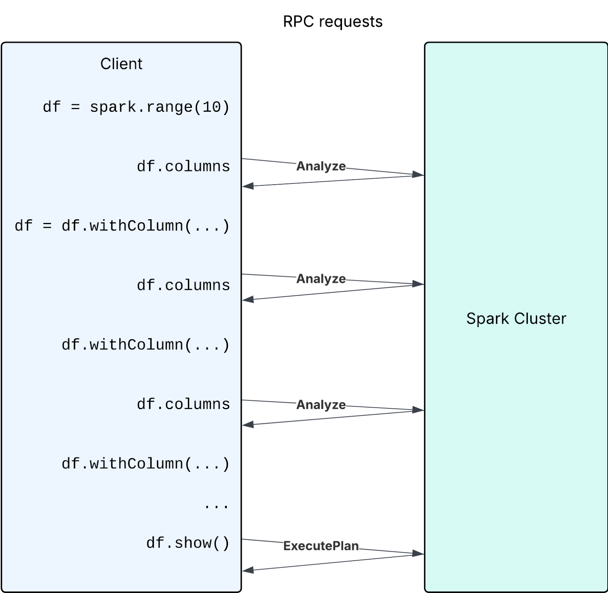

Eager vs Lazy: Spark Connect vs Spark Classic
The comparison highlights key differences between Spark Connect and Spark Classic in terms of execution and analysis behavior. While both utilize lazy execution for transformations, Spark Connect also defers analysis, introducing unique considerations like temporary view handling and UDF evaluation. The guide outlines common gotchas and provides strategies for mitigation.
When does this matter? These differences are particularly important when migrating existing code from Spark Classic to Spark Connect, or when writing code that needs to work with both modes. Understanding these distinctions helps avoid unexpected behavior and performance issues.
For an overview of Spark Connect, see Spark Connect Overview.
Query Execution: Both Lazy
Spark Classic
In traditional Spark, DataFrame transformations (e.g., filter, limit) are lazy. This means they are not executed immediately but are encoded in a logical plan. The actual computation is triggered only when an action (e.g., show(), collect()) is triggered.
Spark Connect
Spark Connect follows a similar lazy evaluation model. Transformations are constructed on the client side and sent as unresolved plans to the server. The server then performs the necessary analysis and execution when an action is called.
Comparison
Both Spark Classic and Spark Connect follow the same lazy execution model for query execution.
| Aspect | Spark Classic & Spark Connect |
|---|---|
Transformations: df.filter(...), df.select(...), df.limit(...), etc |
Lazy execution |
SQL queries: spark.sql("select …") |
Lazy execution |
Actions: df.collect(), df.show(), etc |
Eager execution |
SQL commands: spark.sql("insert …"), spark.sql("create …"), etc |
Eager execution |
Schema Analysis: Eager vs. Lazy
Spark Classic
Traditionally, Spark Classic performs analysis eagerly during logical plan construction. This analysis phase converts the unresolved plan into a fully resolved logical plan and verifies that the operation can be executed by Spark. One of the key benefits of performing this work eagerly is that users receive immediate feedback when a mistake is made.
For example, executing spark.sql("select 1 as a, 2 as b").filter("c > 1") will throw an error eagerly, indicating the column c cannot be found.
Spark Connect
Spark Connect differs from Classic because the client constructs unresolved plans during transformation and defers their analysis. Any operation that requires a resolved plan—such as accessing a schema, explaining the plan, persisting a DataFrame, or executing an action—causes the client to send the unresolved plans to the server over RPC. The server then performs full analysis to get its resolved logical plan and do the operation.
For example, spark.sql("select 1 as a, 2 as b").filter("c > 1") will not throw any error because the unresolved plan is client-side only, but on df.columns or df.show() an error will be thrown because the unresolved plan is sent to the server for analysis.
Comparison
Unlike query execution, Spark Classic and Spark Connect differ in when schema analysis occurs.
| Aspect | Spark Classic | Spark Connect |
|---|---|---|
Transformations: df.filter(...), df.select(...), df.limit(...), etc |
Eager | Lazy |
Schema access: df.columns, df.schema, df.isStreaming, etc |
Eager | Eager Triggers an analysis RPC request, unlike Spark Classic |
Actions: df.collect(), df.show(), etc |
Eager | Eager |
| Dependent session state of DataFrames: UDFs, temporary views, configs, etc | Eager | Lazy Evaluated during the plan execution of the DataFrame |
| Dependent session state of temporary views: UDFs, temporary views, configs, etc | Eager | Eager The analysis is triggered eagerly when creating the temporary view |
Common Gotchas (with Mitigations)
If you are not careful about the difference between lazy vs. eager analysis, there are four key gotchas to be aware of: 1) overwriting temporary view names, 2) capturing external variables in UDFs, 3) delayed error detection, and 4) excessive schema access on new DataFrames.
1. Reusing temporary view names
def create_temp_view_and_create_dataframe(x):
spark.range(x).createOrReplaceTempView("temp_view")
return spark.table("temp_view")
df10 = create_temp_view_and_create_dataframe(10)
assert len(df10.collect()) == 10
df100 = create_temp_view_and_create_dataframe(100)
assert len(df10.collect()) == 10 # <-- User expects the df still references the old temp_view, but in SparkConnect, it is not.
assert len(df100.collect()) == 100
In Spark Connect, the DataFrame stores only a reference to the temporary view by name. The internal representation (proto plan) for the DataFrame in the above code looks like this:
# The proto plan of spark.table("SELECT * FROM temp_view")
root {
sql {
query: "SELECT * FROM temp_view"
}
}
# The proto plan of spark.table("temp_view")
root {
read {
named_table {
unparsed_identifier: "temp_view"
}
}
}
As a result, if the temp view is later replaced, the data in the DataFrame will also change because it looks up the view by name at execution time.
This behavior differs from Spark Classic, where due to eager analysis, the logical plan of the temp view is embedded into the df’s plan at the time of creation. Therefore, any subsequent replacement of the temp view does not affect the original df.
In Spark Connect, users should be more cautious when reusing temporary view names, as replacing an existing temp view will affect all previously created DataFrames that reference it by name.
Mitigation
Create unique temporary view names, for example by including a UUID in the view name. This avoids affecting any existing DataFrames that reference a previously registered temp view.
import uuid
def create_temp_view_and_create_dataframe(x):
temp_view_name = f"`temp_view_{uuid.uuid4()}`" # Use a random name to avoid conflicts.
spark.range(x).createOrReplaceTempView(temp_view_name)
return spark.table(temp_view_name)
df10 = create_temp_view_and_create_dataframe(10)
assert len(df10.collect()) == 10
df100 = create_temp_view_and_create_dataframe(100)
assert len(df10.collect()) == 10 # It works as expected now.
assert len(df100.collect()) == 100
In this way, the proto plan of the df will reference the unique temp view:
root {
sql {
query: "SELECT * FROM `temp_view_3b851121-e2f8-4763-9168-8a0e886b6203`"
}
}
Scala example:
import java.util.UUID
def createTempViewAndDataFrame(x: Int) = {
val tempViewName = s"`temp_view_${UUID.randomUUID()}`"
spark.range(x).createOrReplaceTempView(tempViewName)
spark.table(tempViewName)
}
val df10 = createTempViewAndDataFrame(10)
assert(df10.collect().length == 10)
val df100 = createTempViewAndDataFrame(100)
assert(df10.collect().length == 10) // Works as expected
assert(df100.collect().length == 100)
2. UDFs with mutable external variables
It is generally considered bad practice for UDFs to depend on mutable external variables, as this introduces implicit dependencies, can lead to non-deterministic behavior, and reduces composability. However, if you do have such a pattern, be aware of the following gotcha:
from pyspark.sql.functions import udf
x = 123
@udf("INT")
def foo():
return x
df = spark.range(1).select(foo())
x = 456
df.show() # Prints 456
In this example, the df displays 456 instead of 123. This is because, in Spark Connect, Python UDFs are lazy—their serialization and registration are deferred until execution time. That means the UDF is only serialized and uploaded to the Spark cluster for execution when df.show() is called.
This behavior differs from Spark Classic, where UDFs are eagerly created. In Spark Classic, the value of x at the time of UDF creation is captured, so subsequent changes to x do not affect the already-created UDF.
Another example of this gotcha is creating UDFs in a loop:
import json
from pyspark.sql.functions import udf, col
df = spark.createDataFrame([{"values": '{"column_1": 1, "column_2": 2}'}], ["values"])
for j in ['column_1', 'column_2']:
def extract_value(col):
return json.loads(col).get(j)
extract_value_udf = udf(extract_value)
df = df.withColumn(j, extract_value_udf(col('values')))
df.show() # It shows 2 for both 'column_1' and 'column_2'
This is the same issue as above. It happens because Python closures capture variables by reference, not by value, and UDF serialization and registration is deferred when there is an action on the DataFrame. So both UDFs end up using the last value of j — in this case ‘column_2’.
Mitigation
If you need to modify the value of external variables that a UDF depends on, use a function factory (closure with early binding) to correctly capture variable values. Specifically, wrap the UDF creation in a helper function to capture the value of a dependent variable at each loop iteration.
from pyspark.sql.functions import udf
def make_udf(value):
def foo():
return value
return udf(foo)
x = 123
foo_udf = make_udf(x)
x = 456
df = spark.range(1).select(foo_udf())
df.show() // Prints 123 as expected
By wrapping the UDF definition inside another function (make_udf), we create a new scope where the current value of x is passed in as an argument. This ensures each generated UDF has its own copy of the field, bound at the time the UDF is created.
Scala example:
def makeUDF(value: Int) = udf(() => value)
var x = 123
val fooUDF = makeUDF(x) // Captures the current value
x = 456
val df = spark.range(1).select(fooUDF())
df.show() // Prints 123 as expected
3. Delayed error detection
Error handling during transformations:
df = spark.createDataFrame([("Alice", 25), ("Bob", 30)], ["name", "age"])
try:
df = df.select("name", "age")
df = df.withColumn(
"age_group",
when(col("age") < 18, "minor").otherwise("adult"))
df = df.filter(col("age_with_typo") > 6) # <-- The use of non-existing column name will not throw analysis exception in Spark Connect
except Exception as e:
print(f"Error: {repr(e)}")
The above error handling is useful in Spark Classic because it performs eager analysis, which allows exceptions to be thrown promptly. However, in Spark Connect, this code does not pose any issue, as it only constructs a local unresolved plan without triggering any analysis.
Mitigation
If your code relies on the analysis exception and wants to catch it, you can trigger eager analysis with df.columns, df.schema, df.collect(), etc.
try:
df = ...
df.columns # <-- This will trigger eager analysis
except Exception as e:
print(f"Error: {repr(e)}")
Scala example:
import org.apache.spark.SparkThrowable
import org.apache.spark.sql.functions._
val df = spark.createDataFrame(Seq(("Alice", 25), ("Bob", 30))).toDF("name", "age")
try {
val df2 = df.select("name", "age")
.withColumn("age_group", when(col("age") < 18, "minor").otherwise("adult"))
.filter(col("age_with_typo") > 6)
df2.columns // Trigger eager analysis to catch the error
} catch {
case e: SparkThrowable => println(s"Error: ${e.getMessage}")
}
4. Excessive schema access on new DataFrames
4.1 Creating new DataFrames step by step and accessing their schema on each iteration
The following is an anti-pattern:
import pyspark.sql.functions as F
df = spark.range(10)
for i in range(200):
new_column_name = str(i)
if new_column_name not in df.columns: # <-- The df.columns call causes a new Analyze request in every iteration
df = df.withColumn(new_column_name, F.col("id") + i)
df.show()
While building the DataFrame step by step, each time a new DataFrame is generated with an empty schema, which is lazily computed and cached on access. However, if a user’s code accesses the schema of a large number of new DataFrames using methods such as df.columns, it will result in a large number of analysis requests to the server.

Performance can be improved if users avoid large numbers of Analyze requests by avoiding excessive usage of calls triggering eager analysis (e.g. df.columns, df.schema, etc)
Mitigation
In the above specific example, the recommended mitigation is to create all the column expressions in a loop, and create a single project with all columns (df.select(*col_exprs)).
If your code cannot avoid the above anti-pattern and must frequently check columns of new DataFrames, maintain a set to track column names to avoid analysis requests thereby improving performance.
df = spark.range(10)
columns = set(df.columns) # Maintain the set of column names
for i in range(200):
new_column_name = str(i)
if new_column_name not in columns: # Check the set
df = df.withColumn(new_column_name, F.col("id") + i)
columns.add(new_column_name)
df.show()
Scala example:
import org.apache.spark.sql.functions._
var df = spark.range(10).toDF
val columns = scala.collection.mutable.Set(df.columns: _*)
for (i <- 0 until 200) {
val newColumnName = i.toString
if (!columns.contains(newColumnName)) {
df = df.withColumn(newColumnName, col("id") + i)
columns.add(newColumnName)
}
}
df.show()
4.2 Creating a large number of intermediate DataFrames and accessing their schema
Another similar case is creating a large number of unnecessary intermediate DataFrames and analyzing them. In the following case, the goal is to extract the field names from each column of a struct type.
from pyspark.sql.types import StructType, StructField, StringType, IntegerType
# Create a DataFrame with nested StructTypes
data = [
(1, ("Alice", 25), ("New York", "USA")),
(2, ("Bob", 30), ("Berlin", "Germany")),
(3, ("Charlie", 35), ("Paris", "France")),
]
schema = StructType([
StructField("id", IntegerType(), True),
StructField("person", StructType([
StructField("name", StringType(), True),
StructField("age", IntegerType(), True)
])),
StructField("address", StructType([
StructField("city", StringType(), True),
StructField("country", StringType(), True)
]))
])
df = spark.createDataFrame(data, schema)
# Extract field names from each struct-type column
struct_column_fields = {
column_schema.name: df.select(column_schema.name + ".*").columns
for column_schema in df.schema
if isinstance(column_schema.dataType, StructType)
}
print(struct_column_fields)
However, this code snippet can lead to poor performance when there are many columns, as it creates and analyzes a large number of new DataFrames—each call to df.select(column_schema.name + ".*") generates a new DataFrame, and columns triggers analysis on it.
Mitigation
Obtain StructType field information directly from the DataFrame’s schema instead of creating intermediate DataFrames.
from pyspark.sql.types import StructType
df = ...
struct_column_fields = {
column_schema.name: [f.name for f in column_schema.dataType.fields]
for column_schema in df.schema
if isinstance(column_schema.dataType, StructType)
}
print(struct_column_fields)
Scala example:
import org.apache.spark.sql.types.StructType
df = ...
val structColumnFields = df.schema.fields
.filter(_.dataType.isInstanceOf[StructType])
.map { field =>
field.name -> field.dataType.asInstanceOf[StructType].fields.map(_.name)
}
.toMap
println(structColumnFields)
This approach is significantly faster when dealing with a large number of columns because it avoids creating and analyzing numerous DataFrames.
Summary
| Aspect | Spark Classic | Spark Connect |
|---|---|---|
| Query execution | Lazy | Lazy |
| Command execution | Eager | Eager |
| Schema analysis | Eager | Lazy |
| Schema access | Local | Triggers RPC, and caches the schema on first access |
| Temporary views | Plan embedded | Name lookup |
| UDF serialization | At creation | At execution |
The key difference is that Spark Connect defers analysis and name resolution to execution time.